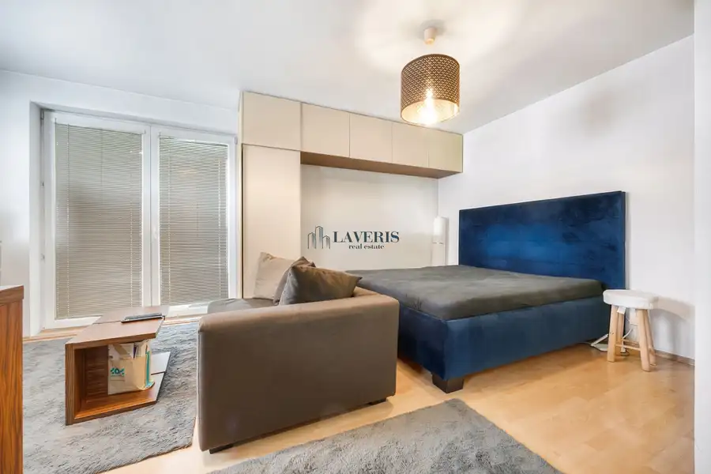
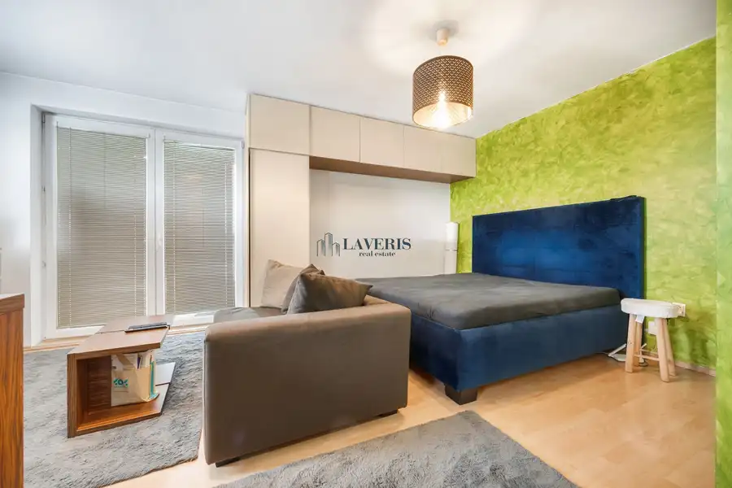
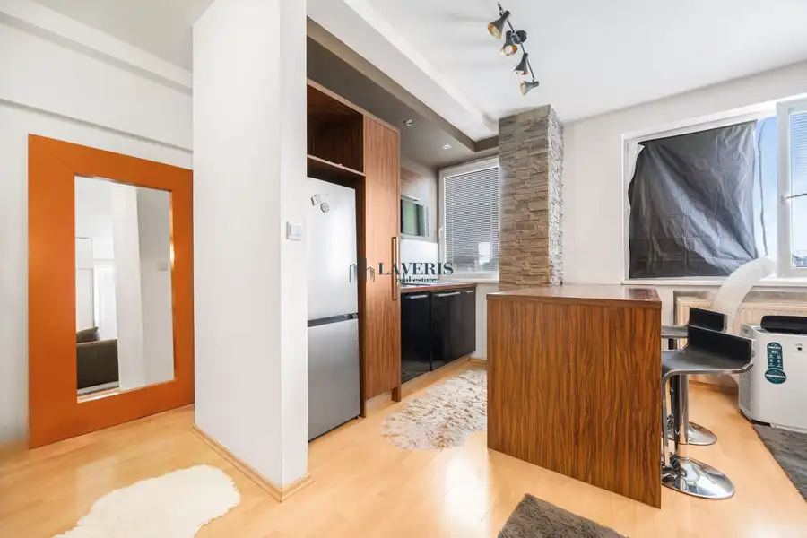
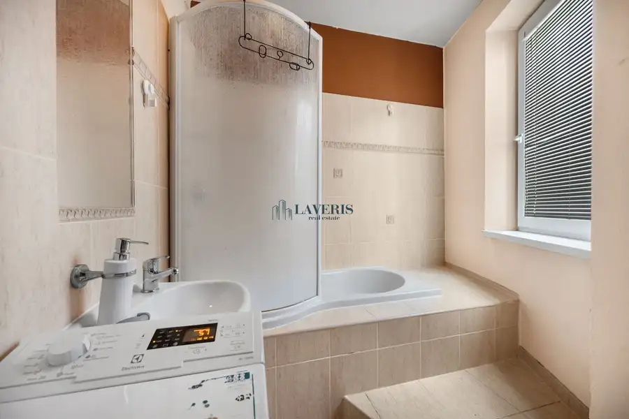
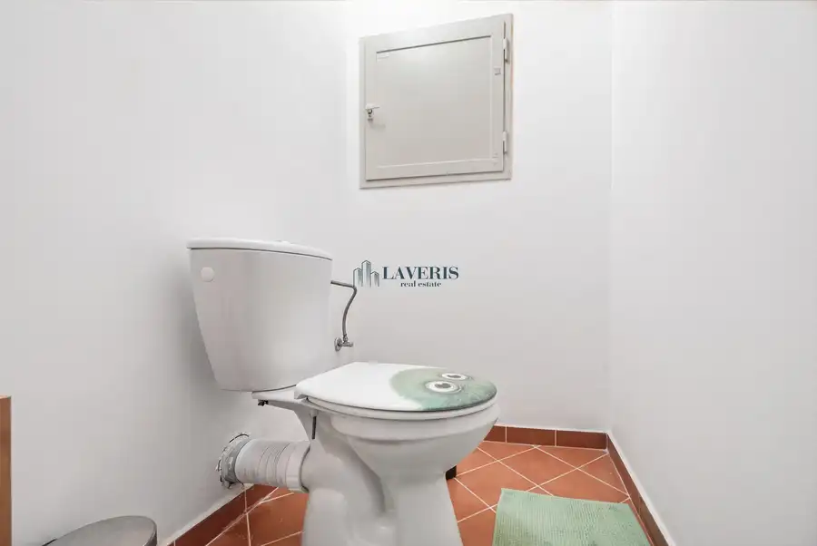
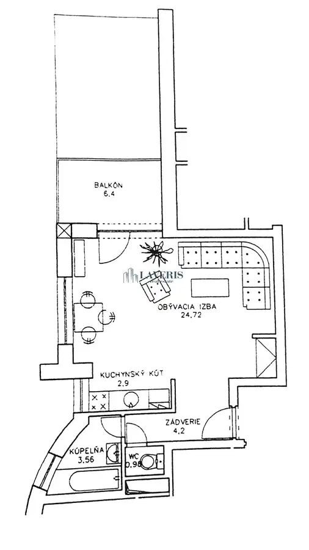

Priestranný, svetlý a kompletne zariadený 1 izbový byt so zasklenou loggiou
Podunajské Biskupice, Bratislava







- Dispozícia1-izbový
- Plocha42 m²
- Poschodie3. z 7
- StavNovostavba
- VlastníctvoOsobné
- Energetická triedaB
O nehnuteľnosti
Objavte bývanie, ktoré v sebe spája mestskú dynamiku s premysleným komfortom. Ponúkame vám na predaj štýlový, kompletne zariadený 1-izbový byt nachádzajúci sa na vyhľadávanej adrese na Kazanskej ulici v Bratislave, v mestskej časti Podunajské Biskupice. Tento byt je ideálnou voľbou pre jednotlivca alebo mladý pár, ktorí hľadajú štartovacie bývanie bez nutnosti ďalších investícií, alebo pre skúseného investora hľadajúceho nehnuteľnosť s okamžitou možnosťou prenájmu.Interiér bytu prešiel modernou úpravou a je navrhnutý s maximálnym dôrazom na funkčnosť a estetiku. Hlavná obytná časť je inteligentne rozdelená tak, aby poskytovala dostatok súkromia na relax aj praktický priestor pre každodenný život. Dominantou izby je elegantná čalúnená posteľ v kráľovskej modrej farbe, vedľa ktorej sa nachádza pohodlná sedacia súprava, ktorá spolu s dizajnovým nábytkom a vkusným osvetlením vytvára hrejivú atmosféru domova. Kuchynská časť je integrovaná do obytného celku. Moderná linka v kontrastných tmavých a drevených tónoch je vybavená spotrebičmi a doplnená o štýlový barový pult s vysokými stoličkami, ktorý slúži nielen na stolovanie, ale aj ako vizuálne oddelenie pracovnej zóny od odpočinkovej. Majitelia určite ocenia nadštandardné množstvo úložného priestoru vyriešeného vstavanými skriňami, ktoré siahajú až po strop a nenarušujú čisté línie bytu. Veľkým benefitom je priestranná zasklená loggia, ktorá rozširuje úžitkovú plochu bytu a ponúka ideálne miesto na rannú kávu či relax po práci bez ohľadu na počasie.Lokalita na Kazanskej ulici patrí k najobľúbenejším častiam Podunajských Biskupíc vďaka vynikajúcej občianskej vybavenosti. V pešej dostupnosti nájdete obchody, kaviarne, lekárne aj zastávky MHD, ktoré zabezpečujú rýchle spojenie s centrom mesta. Blízkosť napojenia na mestský obchvat zas uľahčuje cestovanie pre motorizovaných obyvateľov.Tento byt predstavuje harmonickú rovnováhu medzi dizajnom a praktickosťou za cenu 174 900 €. Stačí si len rozbaliť kufre a začať novú kapitolu v prostredí, ktoré vás očarí svojou energiou.**HLAVNÉ BENEFITY NEHNUTEĽNOSTI:**- **Slnečný interiér**: Bohatý prísun denného svetla počas celého dňa.- **Skvelá dispozícia**: Logické rozdelenie na spaciu, dennú a kuchynskú časť.- **Plne zariadený**: Predáva sa so všetkým nábytkom a vybavením viditeľným na fotkách.- **Zasklená loggia**: Celoročne využiteľný vonkajší priestor chránený pred dažďom a prachom.- **Množstvo úložného priestoru**: Vstavané skrine až po strop šetria miesto v obytnej zóne.- **Moderný dizajn**: Vkusné farebné kombinácie a kvalitné materiály.- **Barové stolovanie**: Štýlové riešenie kuchyne s barovým pultom.- **Atraktívna lokalita**: Kompletná občianska vybavenosť a rýchla dostupnosť do centra Bratislavy.V prípade záujmu o obhliadku alebo bližšie informácie nás neváhajte kontaktovať na e-mailovej adrese: **lorencova@laveris.sk**. Tešíme sa na stretnutie s Vami!
Parametre
- Cena vrátane energií
- Nie
- Druh
- 1 izbový byt
- Dátum zverejnenia
- 11. 08. 2026
- Energetický certifikát budovy
- B
- Orientácia
- Juhovýchodná
- Podlažie
- 3
- Počet lodžií
- 1
- Počet nadzemných podlaží
- 7
- Počet spální
- 1
- Rok kolaudácie
- 2017
- Stav nehnuteľnosti
- Novostavba
- Telekomunikácie
- Telefón, Internet, Optická sieť
- Typ
- Predaj
- Typ konštrukcie
- Zmiešaná
- Vlastníctvo
- Osobné
- Vybavenie
- Lodžia
- Vykurovanie
- Ústredné
- Úžitková plocha
- 42 m²